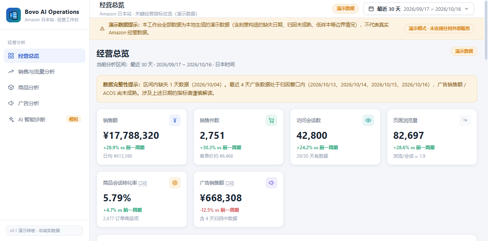
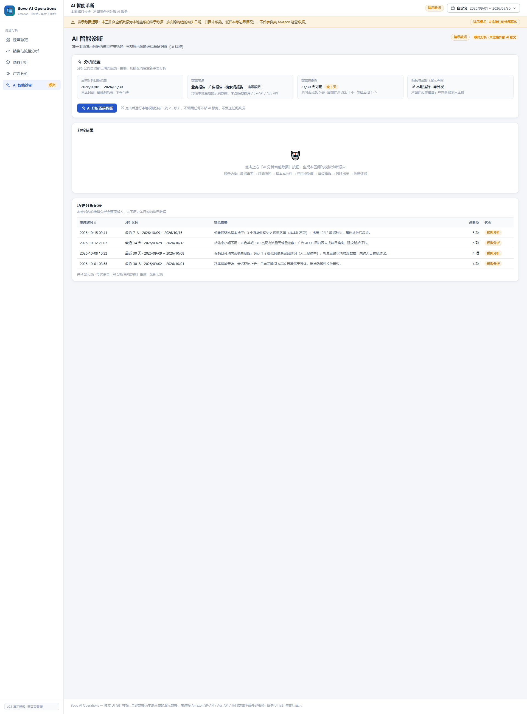

Internal software · Windows desktop
Bovo AI Operations
A desktop analysis workspace that we developed for our own Amazon Japan business. It brings sales, inventory, product and search-performance data into one place, stores it in a local database, and lets us run AI diagnostics on demand.
What it is
A clearer view of our own business.
Bovo AI Operations is a Windows application used by our company to review how our products perform on Amazon Japan. It connects to Amazon Selling Partner API (SP-API) for our own seller account, keeps the business records in a local SQLite database on the Windows computer, and provides analysis screens for sales, inventory, products and search.
The application is developed and operated by us, for us. It is not a commercial product, is not sold or licensed to other sellers, and is not used to provide advertising or account-management services for third parties.
- Developed and operated by 内蒙古魏帛绒毛制品有限公司
- Used only for our own Amazon Japan seller account
- Business data stored locally on our own Windows computers
- AI analysis runs only when a user explicitly starts it

Current functions
What the workspace does today.
- Amazon SP-API sales analysis Sales and traffic data from our own seller account, reviewed by period and product.
- Inventory analysis FBA inventory levels and coverage, so we can judge what to restock and when.
- Product performance analysis How each product and variation performs over time, including cost inputs for margin review.
- SQP / SCP search performance Search Query Performance (SQP) and Search Catalog Performance (SCP) data, to see which search terms and impressions our products receive.
- Local database Business records held in a local SQLite database on the Windows computer, under our own account controls.
- User-triggered AI diagnostics When the user chooses to, a prepared snapshot of business data is sent to DeepSeek for a structured diagnostic report. Nothing is sent until the user confirms the request.

Design choices
Local first, and user-initiated.
Business data stays on our own computers unless we explicitly ask for an AI analysis. Credentials are protected with the Windows Data Protection API in the current Windows user context. Each AI request is prepared from a selected scope and confirmed before it is sent.
The workspace also makes the quality of its own data visible: when dates are missing, attribution is still maturing, or a sample is small, the relevant figures are presented with that context instead of being silently averaged into a clean number.
Screens on this page show the application interface with sample data for demonstration. They do not show our live business figures.
Scope
How the software is used.
For our own business only
Bovo AI Operations is used to operate and understand the Amazon Japan business of 内蒙古魏帛绒毛制品有限公司. It is not available for download or purchase, and it has no public login.
No third-party services
We do not offer advertising management, consulting or account-operation services to other sellers. The application does not access data belonging to other Amazon sellers or advertisers.
No Amazon trademark rights implied
We use Amazon services as an independent seller. Bovo AI Operations is a product of our own company, and Amazon has not reviewed, sponsored or endorsed it.
Privacy information
How the application handles information, including local storage and AI requests, is set out in our Privacy Policy.